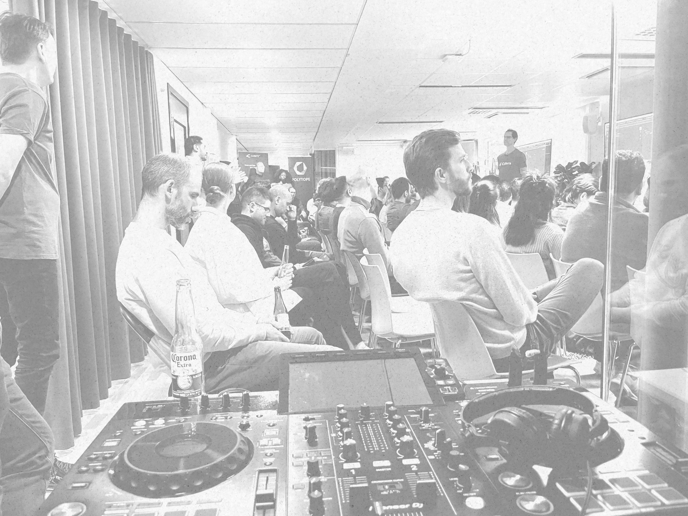
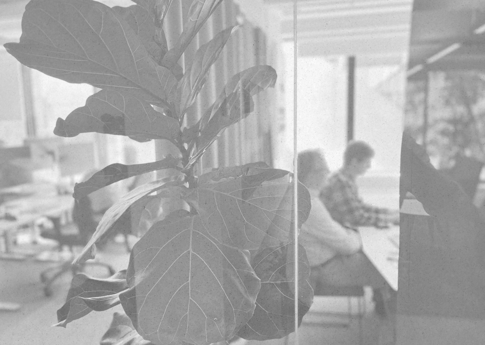
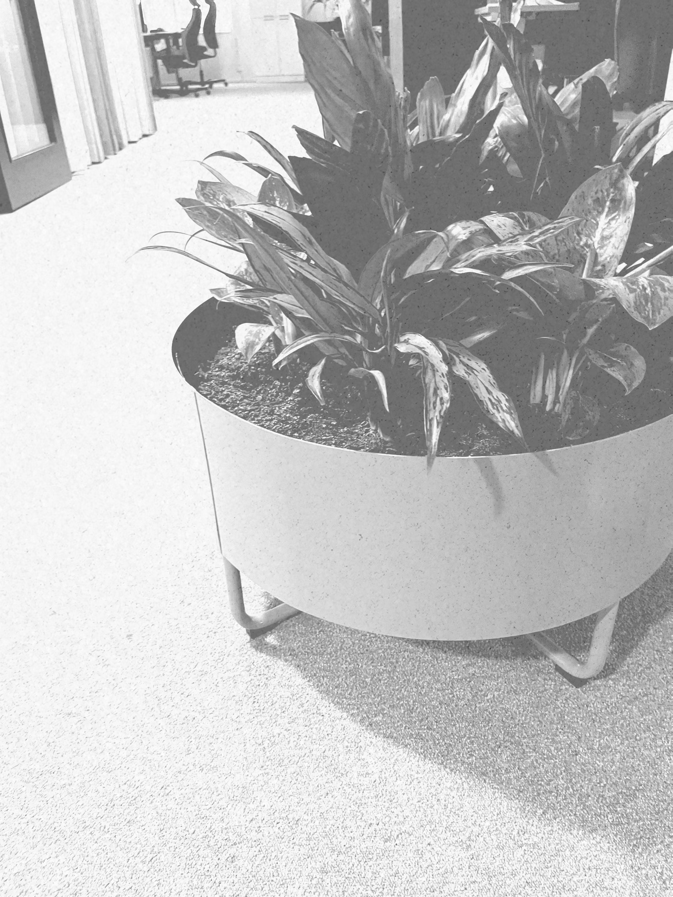

Foton
Svartvita foton i polygonform
Ingen färgkorrigering utöver gråskala och lätt kontrast. Beskär alltid i en polygon, aldrig en perfekt rektangel.



img { filter: grayscale(1) contrast(1.05); }
.mg-poly-img--a { clip-path: polygon(7% 0%, 94% 2%, 100% 10%, 98% 90%, 93% 100%, 5% 97%, 0% 88%, 2% 8%); }Gör
- Använd verkliga människor och miljöer: kontor, möten, skärmar, whiteboards, händelser
- Välj lugna kompositioner med plats för text
- Växla polygon A/B/C mellan bilder på samma sida
- Skriv en alt-text som beskriver vad bilden visar
Gör inte
- Färgfoton, färgfilter eller dubbeltoner
- Stockkänsla: leende modeller vid skrivbord
- Perfekt rektangulära beskärningar
- Text direkt på ett livligt foto
Tänk på
- Ladda gärna upp färgfoton i ett CMS. Svartvitt och polygonbeskärning läggs på av CSS
- Alla foton finns i Bildbanken, där de kan laddas ned
Text på foto
Vit platta över bilden
Text läggs aldrig direkt på fotot. Den ligger på en vit polygonplatta med åtta hörn, som en pappersflik ovanpå bilden.

Expertisområde
Vi hjälper kunder bygga fungerande mjukvara
Professionella, avskalade, tydliga och lite lekfulla
Läs mer<div class="mg-img-block"><div class="mg-img-block__frame">
<img class="mg-img-block__bg" src="…jpg" alt="…">
<div class="mg-img-block__plate">
<p class="mg-kicker">Expertisområde</p>
<h2>Rubrik</h2><p>Text</p>
<a class="mg-btn mg-btn--primary" href="#">Knapp</a>
</div></div></div>Gör
- Plattan har kicker, rubrik, kort text och högst en knapp
- Låt bilden synas på minst halva ytan
Gör inte
- Fylla plattan med mer än fyra rader text
- Lägga två plattor på samma bild
Personbilder
Runda och svartvita
Profilbilder och porträtt är det enda stället där cirkelformen används.


Gör
- Svartvit, rund, ansiktet centrerat
- Minst 80 px på webben
Gör inte
- Kvadratiska eller rundade rektangulära porträtt
- Färgade porträtt
- Cirklar för något annat än personer
Ikoner
Platta vektorer i full färg
Ikonerna är handritade, organiska och platta. Färgen väljs efter ikonens betydelse, inte efter var den hamnar.


| Kontext | Storlek |
|---|---|
| Fristående blickfång (ikonrad) | 72 × 72 px |
| Kort och erbjudanden | 40 × 40 px |
| Inline i text, sidospalt | 24–32 px |
Citattecken (citation.svg) | 40 × 35 px, endast som dekor i citat |
Gör
- Visa ikoner i full färg och full styrka
- Max 2–3 färger per ikon
- Ladda ikoner som
<img>medalt=""när de är dekorativa - Välj färg efter betydelse: blå teknik, grön dialog och godkänt, röd tid, gul idé
Gör inte
- Opacity, gråskala eller mörkare filter på ikoner
- Gradienter, skuggor eller kantlinje på ikoner
- Att byta färg på en ikon för att den ska passa en sida
- Magentafärgade ikoner utanför värdeorden
Tänk på
- Värdeordens ikoner (
personliga,trygga,kommunikativa,lärande) används bara när Magello som bolag beskrivs - Nya ikoner: SVG, solida fills, inga effekter, ritade för vit, rose-50 och rose-100 bakgrund